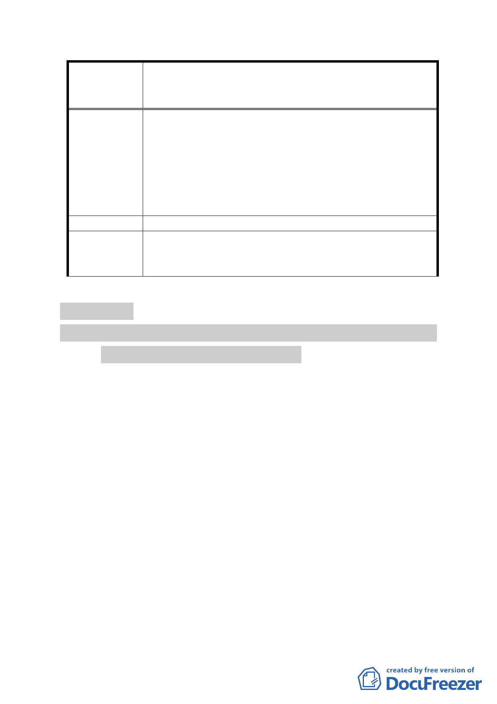

變更及修訂臺北市中正區永昌段四小段 48 地號等 380
案 名 筆土地（徵求參與「促進都市再生 2010 年臺北好好看」
開發計畫 7 處基地回復原都市計畫案）細部計畫案
不利於整合。若再取消公辦更新，則事業計畫報核
門檻由三分之二再提高至四分之三，整合也會有難
度。
申請人己取得附件六除乙更新單元之四、五樓公寓外
之其他所有權人逾四分之三願意加入都更之同意書。
上述如蒙核定，將於公佈後三個月內逕將甲更新單元
同意書送核，乙單元則繼續協商溝通。
建議辦法
本次計畫案之回復係原計畫書中載明之規定，與其他好
委 員 會 決 議 好看案件之處理須具一致性。所提意見錄請市府納入後
續辦理相關作業之參考。
審議事項 二
案名：變更臺北市大安區辛亥段五小段 181 地號機關用地為大專
用地（國立臺灣大學）主要計畫案
案情概要說明：
一、計畫區現況：
（一）本計畫區為辛亥段五小段 181 地號之機關用地，位於臺灣
大學長興校區，芳蘭路與基隆路三段 155 巷交會口，目前
為交通部民用航空局使用之翔安大樓。計畫區西、北、東
側皆臨臺灣大學校地，南側為保護區。
（二）計畫區面積為 7,648 ㎡。
（三）土地權屬為國有（管理單位為交通部民航局）。
二、計畫緣起：
臺灣大學為發展生醫科技園區，擬以有償撥用方式取得
癌醫中心醫院南側、目前為交通部民用航空局經管之國有土
地（翔安大樓），以作為臺大癌醫中心醫院擴院之需。案經
-9-